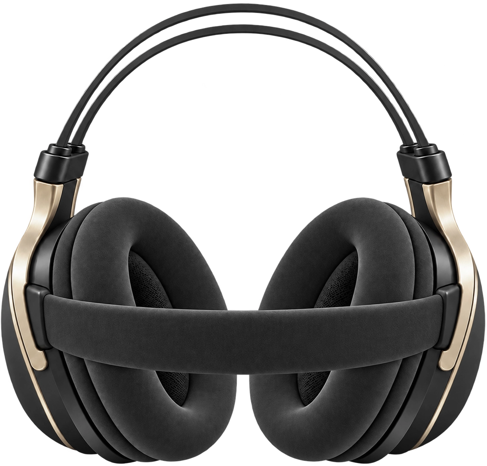

集中を支える、5つのガジェット。
ヘッドセットを中心に、キーボード・マウス・スタンドまで。見た目だけではなく、使い続けたときに差が出る快適さを重視しています。


M-Wear
¥18,700 税込
耳への負担を抑えた快適な装着感と、通話・ゲーム・制作に対応するクリアな音を両立した主力製品です。
- 低反発イヤーパッドと軽量設計
- Bluetooth 6.0 / 3.5mm・USB-C有線対応
- 着脱式ノイズ低減マイク
- 最大30時間再生
| 重量 | 約252g |
|---|---|
| 接続方式 | Bluetooth 6.0 / 3.5mm・USB-C有線 |
| 再生時間 | 最大30時間 |
| カラー | ダークグラファイト |

M-Write
¥14,800 税込
右上ダイヤルと控えめなラインライトが特徴の75%キーボード。独自の静音チューニングで、作業にもゲームにも落ち着いて使えます。
- 75%レイアウトの省スペース設計
- 静音メカニカルスイッチ
- USB-C / Bluetooth デュアル接続
- 音量ダイヤルとライトインジケーター搭載
| 配列 | 75% レイアウト |
|---|---|
| 接続方式 | USB-C / Bluetooth 5.1 |
| 重量 | 約720g |
| 特徴 | 金属ノブ、静音スイッチ |

M-Wheel
¥9,900 税込
波のようなサイドラインと自然な親指の収まりで、長時間使っても疲れにくいワイヤレスマウスです。
- 右手用エルゴノミクス設計
- 静音クリック
- 2.4GHz / Bluetooth 切替
- サイドボタンとLEDインジケーター搭載
| 接続方式 | 2.4GHz / Bluetooth 5.0 |
|---|---|
| DPI | 800 / 1200 / 1600 |
| 電池持続 | 最大6ヶ月 |
| 特徴 | 波型サイドグリップ |

M-Work
¥8,600 税込
高さも角度も細かく追い込める、昇降機構付きのノートPCスタンド。作業中の姿勢を落ち着かせます。
- 細かな角度・高さ調整
- 放熱スリット搭載
- 剛性の高い金属ヒンジ
- 折りたたみ可能な据え置き設計
| 対応サイズ | 11〜16インチ |
|---|---|
| 素材 | アルミニウム合金 |
| 重量 | 約860g |
| 特徴 | 昇降アーム構造 |

M-Whisper
¥12,800 税込
軽い装着感と落ち着いた音づくりを両立したインナーイヤー型ワイヤレスイヤホン。移動中にも制作中にも使いやすいバランスを目指しました。
- 軽量インナーイヤー設計
- Bluetooth 6.0 / マルチポイント
- アクティブノイズコントロール
- ケース込み最大32時間再生
| 重量 | 片耳 約4.6g |
|---|---|
| 接続方式 | Bluetooth 6.0 |
| 再生時間 | 本体最大8時間 / ケース込み最大32時間 |
| カラー | ダークグラファイト |